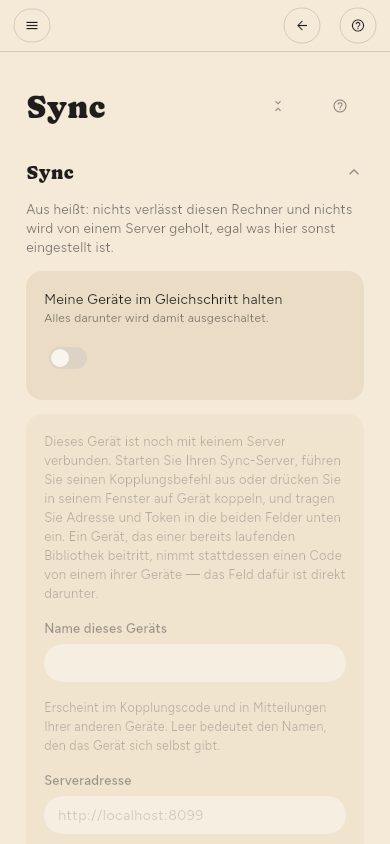

← Quellen verwalten · Inhalt · Tastatur →
Sync
Konfiguration › Erweitert › Sync › Sync. Ihre Geräte halten sich gegenseitig auf demselben Stand: was Sie gelesen haben, was Sie gespeichert haben, Ihre Markierungen und die Artikel selbst.
Die Verbindung ist Ende-zu-Ende-verschlüsselt: Der Server speichert nur Chiffretext und kann Ihre Bibliothek nicht lesen. Es gibt keinen gehosteten Dienst, für den Sie sich anmelden — die Adresse, die Sie eintragen, ist ein Server, den Sie betreiben.

Wann er läuft
Konfiguration › Erweitert › Sync › Wann synchronisieren › Wie oft bietet eine Uhr — alle 15 Minuten bis einmal am Tag — und stattdessen auch Zeitpunkte:
- Nach einer Suche — sobald jede Quelle abgerufen ist, bevor etwas zusammengefasst wird. Mit einem lokalen Modell kann das Zusammenfassen zwanzig Minuten dauern, und die Artikel sind lange vorher bereit.
- Nach dem Zusammenfassen — wenn die ganze Prüfung fertig ist, sodass ein Sync die Artikel und ihre Zusammenfassungen zusammen überträgt.
- Nach jeder Änderung — kurz nachdem Sie etwas lesen, speichern oder verschlagworten.
Solange die App auf dem Bildschirm ist, sendet Konfiguration › Erweitert › Sync › Wann synchronisieren › Jede Änderung synchronisieren, solange die App offen ist jede Änderung innerhalb weniger Sekunden, was auch immer bei Wie oft steht; die Uhr gilt dann nur im Hintergrund. Die Option ist an, bis Sie sie ausschalten, und Nur auf Anfrage heißt weiterhin nur auf Anfrage. Die Rückkehr in die App synchronisiert einmal, bei jeder Einstellung außer Nur auf Anfrage. Änderungen Ihrer anderen Geräte kommen innerhalb von Sekunden an, solange die App offen ist.
Was Sie auch wählen, eine getaktete Verbindung oder eine Akku-Regel hält ihn trotzdem zurück.
Den Server besorgen
Der Server ist ein eigenes Programm, kostenlos und quelloffen. Laden Sie ihn von seiner Release-Seite herunter:
- SummaReader Sync, ein AppImage für Linux: ein Fenster, das den Server startet und seine Geräte zeigt.
- Die headless-Pakete für Linux, macOS und Windows: nur der Server, für einen Rechner, der immer läuft.
Betreiben Sie ihn auf einem Rechner, den alle Ihre Geräte erreichen, zum Beispiel einem, der zu Hause immer eingeschaltet ist. Beim Start gibt er seine Adresse und den Fingerabdruck seines Zertifikats aus. Sein README beschreibt auch Docker und einen systemd-Dienst.
Das erste Gerät verbinden
- Führen Sie auf dem Server
summareader-sync first-device "My library" "Desktop"aus oder drücken Sie im Fenster von SummaReader Sync auf Pair a device. Er zeigt ein Geräte-Token einmal an und kann es nicht noch einmal zeigen. - Öffnen Sie Konfiguration › Erweitert › Sync › Sync und schalten Sie Meine Geräte im Gleichschritt halten ein.
- Tragen Sie die Serveradresse ein, die mit
https://beginnt. Für einen Server im selben Netz drücken Sie stattdessen Im eigenen Netz finden. - Fügen Sie das Token in Geräte-Token ein.
- Beim ersten Kontakt zeigt die App den Fingerabdruck des Serverzertifikats. Vergleichen Sie ihn mit dem, den der Server ausgegeben hat, und bestätigen Sie ihn nur, wenn beide gleich sind.
Ein zweites Gerät koppeln
- Verbinden Sie das erste Gerät wie oben beschrieben.
- Unter Konfiguration › Erweitert › Sync › Weiteres Gerät zeigt Code erzeugen einen QR-Code und denselben Code als Text.
- Scannen Sie ihn auf dem zweiten Gerät oder fügen Sie ihn unter Oder mit einem Code beitreten ein und drücken Sie dann Code verwenden. Ein Smartphone, ein Mac und ein Linux-Desktop mit Webcam können den Code scannen; unter Windows fügen Sie ihn ein.
Der erste Sync zu einem frischen Server fragt vor dem Hochladen nach — ein Server, der Ihre Bibliothek noch nie gesehen hat, ist eine Entscheidung, kein Detail.
Der Wiederherstellungscode
Einmal erzeugt, unter Konfiguration › Erweitert › Sync › Wiederherstellungsschlüssel. Er ist der einzige Weg zurück in Ihre Bibliothek, wenn Sie alle gekoppelten Geräte verlieren. Niemand kann ihn neu ausstellen.
Artikeltext
Lesestand, Markierungen und die Artikel selbst reisen automatisch. Ihr Text und ihre Bilder machen die Masse aus und bleiben standardmäßig hinter einem Verweis: Sync teilt diesem Gerät mit, dass es eine Kopie gibt, und sie wird geholt, wenn Sie den Artikel öffnen.
Konfiguration › Erweitert › Sync › Sync › Alles auf diesem Gerät behalten ändert das — Text und Bilder jedes Artikels werden bei ihrer Ankunft heruntergeladen. Die Einstellung gilt pro Gerät, nicht pro Bibliothek: Sie lohnt sich auf einem Rechner, auf dem Sie offline lesen, und bedeutet auf einem Smartphone viele Daten für Artikel, die Sie nie öffnen. Jeder Sync verwendet dafür höchstens die Zeit aus Höchstens dauern, zuerst Text, dann Bilder. Solange die App offen ist, geht der Download danach im Hintergrund weiter, bis nichts mehr fehlt. So hat ein Artikel, den Sie später öffnen, sein Bild schon. Geht die App in den Hintergrund, hält er an und geht beim nächsten Sync weiter.